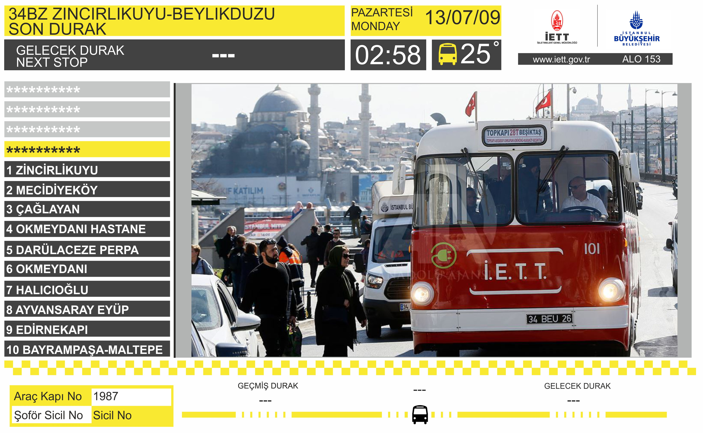
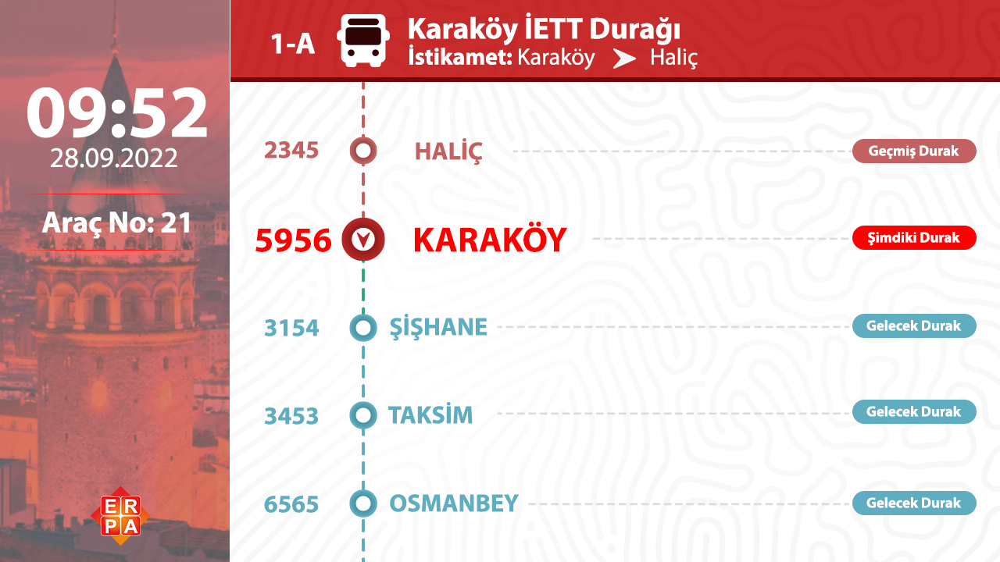
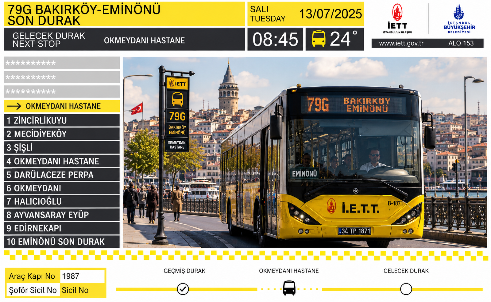

Seçili ekranlar ve özel demo linkleri. Kartlara tıklayın (yeni sekmede açılır).
DURAK Klasörüne koyduğum.
56.4" · 27.7" · 38"
Kavisli 43 inch ekran — video hazır, yayın bekleniyor.
43" · Curve19" · 29" · 32"
Sultangazi Belediyesi araç içi ekranı, durak listesi ve duyuru bandı.
19" · Araç içiİstanbul hat bilgi ekranı, güzergâh haritası ve durak animasyonu.
29" · Araç içi32 inch dikey bilgilendirme paneli, haber slaytları ve canlı saat.
32" · Dikey10.1" · 7" · Geri görüş ve güvenlik ekranı
23.8" · 21.5" · 19" · 15.6"

İETT sarı temalı araç içi ekran, güzergâh ve durak bilgisi.
23.8" · İETT · Sol taraf
Turkuaz-mavi metrobüs araç içi, sonraki durak paneli.
23.8" · Metrobüs · Sol taraf
Lacivert tema, Üsküdar — Bağcılar hattı, videosuz durak ekranı.
19" · Belediye · Sol tarafTuruncu tema, Küçükçekmece — Taksim hattı, videosuz durak ekranı.
19" · Belediye · Sol tarafSultangazi şablonu, İETT sarısı, Taksim — Kadıköy hattı, videosuz.
21.5" · İETT · Sol tarafBordo-kırmızı tema, Şişli — Taksim hattı, videosuz durak ekranı.
21.5" · Belediye · Sol tarafYeşil tema, Beykoz — Kavacık hattı, videosuz durak ekranı.
15.6" · Belediye · Sol tarafTurkuaz tema, Maltepe — Eminönü hattı, videosuz durak ekranı.
15.6" · Belediye · Sol taraf27" · 21.5"